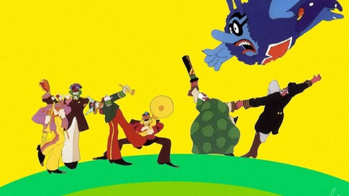

The Beatles have had a pretty incredible career, spanning not only music, but also a handful of films written around the band (at the time, this type of business savvy to place stars across mediums wasn't unusual). One of those films was a feature length animated movie called "Yellow Submarine." The movie could have easily been a lazy cash-in, but it aspired to become something more ambitious, and the result was a psychedelic musical that is very much a product of its time, moreso for better than for worse.The story is barely existent as an excuse to bring the Beatles together on an adventure, but its sense of imagination shines even in its simplicity. In the paradise known as Pepperland, the citizens live in peace to beautiful music, provided by Sgt. Pepper's Lonely Heart Club Band. But the Blue Meanies, a group of nasty individuals who like inflicting fear and hate music, launch an attack on these people, trapping the band in a stasis and bonking apples onto everyone to keep them looking down and quiet. At the last moment, an old sailor named Fred is tasked to take the Yellow Submarine of legend to find help. Across the sea and to other dimensions, he comes across the Beatles in Liverpool, England, and convinces them to travel back with him to save Pepperland.Even if the story is just an excuse to have the Beatles travel in a submarine across strange lands for the majority of the movie, I can't fault the writing itself. It's filled with clever puns and jokes in nearly every line. This helps make the film much more enjoyable than you might imagine beyond the visuals and music, and its endlessly quoteable after you leave the theater. In addition to a DVD and soundtrack, you will be eager to buy a copy of the script too! The corny jokes and the overall message ("All You Need Is Love," the power of music, etc.) make this family friendly, the only questionable content being brief scenes of smoking, which at the time wasn't such a senstive issue.This is a musical, with roughly half of its runtime dedicated to some of the Beatles' most classic songs. It's impressive the the songs used don't feel particularly forced, as if they were written with the intention to tie them together as a musical from the start. And it is hard to imagine anyone who would hate songs like "Yellow Submarine," "Nowhere Man," "Lucy in the Sky with Diamonds" or All You Need Is Love," so it is a treat to hear them here, all sung by the original band themselves. Of course, Paul, Ringo, John and George all voice their respective selves... wait, they didn't?! I was surprised when I found out after seeing the movie that their voices were portrayed by actors, with the band only making a brief cameo live-action appearance just before the credits. For what it's worth, the actors did an impressive job, able to "pass for the originals" to all but the most senstive fans. And I also have to give special mention to Paul Angelis for performing multiple roles, including an excellent performance of the chief Blue Meanie, with a delightful glee full of cackling, shrieks, and clacking teeth. These sound effects are probably given a little too much time in the movie (the Blue Meanie leader constantly looks like he is have a fit like a restless child with multiple personality disorder), but it makes the villain all the more memorable, and I wouldn't have it any other way. The biggest fault of the voice acting is the quality of the audio, which isn't quite as clear as it might have been with modern devices (essentially a flaw of all films more than a few decades old). Finally, let's discuss the visuals, arguably the most memorable element of "Yellow Submarine." The animation itself is severely limited, not unusual for the time it was made, as even the biggest studios were trying to find ways to incorporate "less is more" in their production around this period. If you look closely, you can even see shadows around characters and elements in the foreground, a side-effect of bad lighting on a multi-layered plane in front of the camera. But the visuals are eccentrically unique, incorporating a mixture of occasional live-action and photo collages against its default solid-painted characters. The human characters spend much of the movie crossing dimensions to get back to Pepperland, seeing all manner of colorful monsters and mind-bending environments. The sheer diversity is enough to make the movie interesting even with the audio completely off. While it was before my time and I have trouble discerning the difference, I believe the seemingly drug-induced style of this movie would help define the culture of the 1970's years later.Despite its limited animation and story, "Yellow Submarine" is a clear classic of its medium and of its decade. The movie would be restored about 40 years later and released in a lovely DVD or Bluray set, complete with a small booklet and replicas of cels of the four Beatles as they might have been used in the production. I love the idea of these cels, making this one of my favourite physical releases of any film. If you love the Beatles, or love animation, or have fond memories of the era, and you somehow haven't yet seen "Yellow Submarine," you owe it to yourself to add it to your collection today. Even if you don't fall in either category, you really should try to see it at least once.
- "Ani" More reviews can be found at : https://2danicritic.github.io/ Previous review: review_Yamada-kun_and_the_Seven_Witches Next review: review_Your_Letter